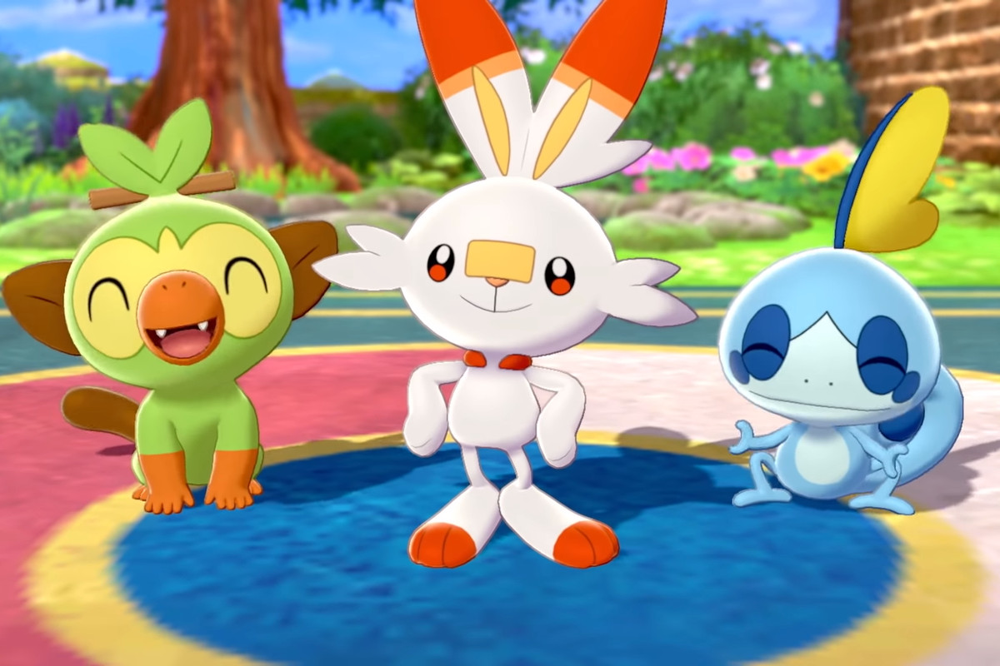

Nintendo ประกาศว่ายอดขายเกม Pokémon Sword and Shield สามารถขายได้ทั้งหมด 6 ล้านชุดทั่วโลก หลังผ่านพ้นวันวางจำหน่ายเพียงสัปดาห์เดียว พร้อมขึ้นแท่นเป็นเกมขายเร็วสุดของระบบ Nintendo Switch แซงหน้า Super Smash Bros. Ultimate’s ที่เคยบันทึกทำยอดขายได้ 5 ล้านชุดในสัปดาห์แรกเป็นที่เรียบร้อย นอกจากนี้ ยอดขายสัปดาห์แรกของ Pokémon Sword and Shield ก็นำหน้าทิ้งห่างจากสถิติยอดขายช่วงสัปดาห์ของ Pokémon Let’s Go (ทั้งเวอร์ชัน Pikachu กับเวอร์ชัน Eevee) ที่ทำได้ที่ 3 ล้านชุดอีกด้วย ก็ถือว่ากลายเป็นเกม Pokémon ที่ประสบความสำเร็จมาก ณ ตอนนี้ แม้ตัวเกมจะมีกระแสวิพากษ์วิจารณ์ด้านคอนเทนต์ Pokédex หลายตัวภาคเก่าไม่ได้กลับมาภาคนี้ แต่คุณภาพเกมโดยรวมก็ยังมีกระแสตอบรับดีมากจากเจ้าสำนักเกมและเกมเมอร์อีกหลายฝ่าย
Pokémon Sword and Shield ออกจำหน่ายแล้ววันนี้ บนระบบ Nintendo Switch